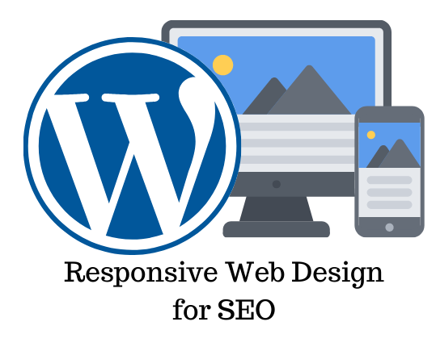

EXPERIENCIA
• 1 DE AGOSTO DEL 2018 – 6 DE ENERO 2019
Servicio social delegación miguel hidalgo. actualizar maquetar diseñar la pagina web de la delegacion ademas de dar soluciones a problemas de soporte con la misma
• 13 DE AGOSTO 2019-18 DE DICIEMBRE 2020.
Faro del saber Popotla
Profesor de computación para personas mayores.
• 6 DE ENERO 2022 A DICIEMBRE 6 2022
Profesor docente en tecnologías de la información y de proyectos nivel bachillerato
Universidad del valle de México Unidad Tlalpan
• 2 DE ENERO 2023 A 1 DE MAYO 2023
trabajando como soporte trabajo por mi cuenta
• 3 DE MARZO DEL 2023 A LA ACTUALIDAD
trabajando como programador full stack y ingeniero de software en agencia Sr. Bang Bang
CONOCIMIENTOS:
Web GENERAL
• Manejo y gestión de c-panel y de directadmin.

• Creación y gestión de Dominios y subdominios.
• Gestores de contenido wordpress(plugins,editores,roles backups,Seguridad,wucommerse y templates) también en winx,Dreamweaver.
• Creación edición personalización de código qr
FRONT END
• • lenguajes de maquetado y dinámico html5, css3, java script.
• Conocimientos intermedios en programas de Adobe como Photoshop dreamwaver ilustraitor lightroom
• En el diseño UX(diseño experiencia de usuario/UI(diseño de interfaz de usuario)), Diseño responsivo móvil y tableta.
• Diseño de interfaz con herramienta Adobe XD.
• Modelos de diseño bootstrap 5 y flexbox.
• Conocimiento en sass lenguaje de hojas de stylos
BACK END
• En base de datos relacionales conocimientos en SQL y mysql además de gestores Workbench phpadmin.
• Conocimiento en control de versiones git y github
• Lenguaje de programación php con manejo de mvc además de estructurado uso de librerías y crud ver.5 a 8

DISEÑO WEB
• Adobe xD.
• figma.
PROGRAMACION GENERAL
• Lenguajes de programación java,c++,phyton además de programación en c a nivel básico pero a nivel medio y alto c++ y c.
• Conocimientos y aplicación de metodología scrum, Lean y six sigma a nivel básico e implementación.
• Conocimiento en github en el curriculum anexo repertorio de código.
• Programación de aplicaciones mobiles webintoapp.
• Conocimiento En redes de computadoras modelo OSI, TCP/IP, uso de vpn.
• Convertir una aplicación o pagina web en una app para Android e ios igual administración y subida en la play store
MANEJO DE OFFICE
• Manejo de paquetería office (Excel.word powerpoint Project manager).
• Manejo de ofimatica google.